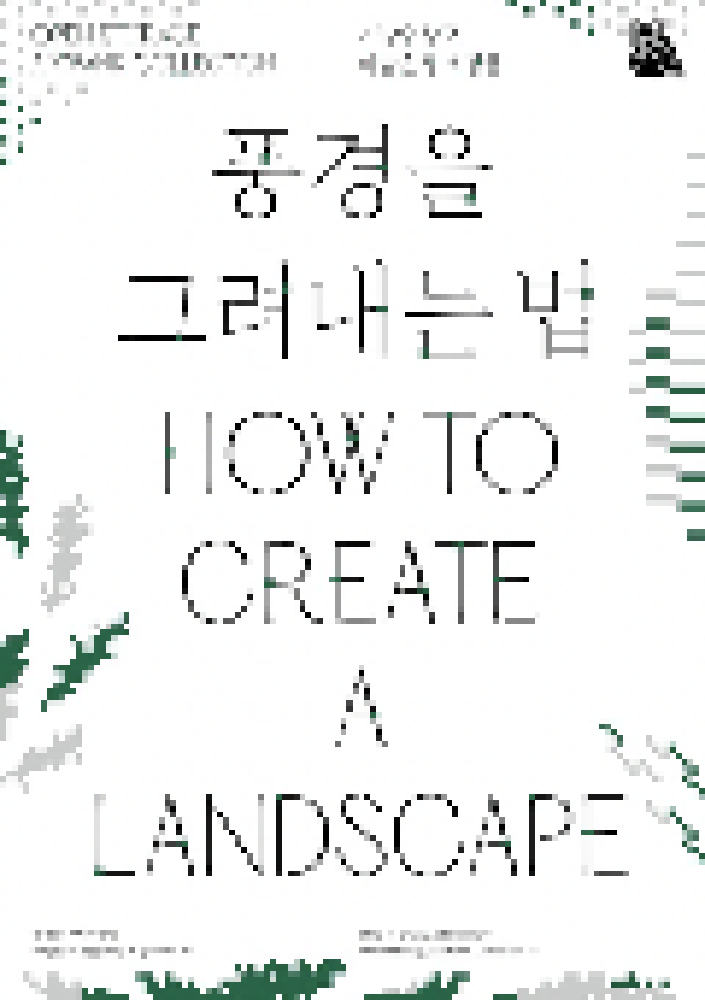

> title
미술은행·정부미술은행 소장품 기획전시 ‹풍경을 그려내는 법›
> content
'풍경'은 미술에서 가장 많이 다루어지는 소재 중 하나입니다. 동서양 문화의 차이처럼 '풍경'을 바라보는 예술가들의 시선 또한 뚜렷한 차이를 보입니다. 서양의 풍경화는 대체로 풍경의 시각적인
관찰과 분석에 중점을
두지만, 동양의 산수화는 단지 바라보는 것을 넘어 풍경의 사유와 체험을 더욱 중시하기 때문입니다.
미술에서 다루어지는 풍경은 단순히 재현을 통한 표현을 넘어 예술가 개인의 경험이자, 한 시대의 미학과 철학이 반영된 결과이기도 합니다. 우리는 같은 풍경을 공유하며 살아가지만 저마다 다른
모습으로 기억하고
기록합니다. 흔히 우리 주변의 일상에서부터, 자연경관, 예상치 못한 코로나 팬데믹 시대를 맞이하게 된 현 상황처럼 사람들은 각기
다른 모습으로 풍경을 기억합니다.
국립현대미술관 미술은행, 정부미술은행 소장품으로 구성된 «풍경을 그려내는 법»은 예술가들이 풍경을 기억하고, 그들만의 기법, 재료, 색채를 통해 표현한 다양한 풍경을 통해 관객들과 함께
소통하고자 합니다.
1. '풍경의 해석'
평범한 풍경이라도 작가들은 고유한 표현방식과 상상력을 더해 독특한 작품으로 완성합니다. 유근택, 유승호, 강운 등 자신만의 독창적인 재료와 표현 기법으로 완성된 풍경화를 통해 관객들은
작가들의 흥미로운 화풍을
비교하며 감상할 수 있습니다.
2. '시선과 색채'
예술가들은 강렬하고 다채로운 색을 통해 일상의 평범한 풍경을 새로운 감각으로 재현합니다. 예민한 시각적 감수성을 지닌 작가들은 자신들이 체험한 자연의 이미지를 독창적인 색감으로
표현합니다. 서용선, 공성훈, 김병종
등의 작품에 나타난 강렬한 색채는 쉽게 지나치는 주변 풍경을 다시 돌아보게 하는 매력을 지니고 있습니다.
3. '재료의 변형'
예술가들은 평면에 그려지는 풍경화를 뛰어넘어 영상 및 다양한 오브제를 이용하여 새로운 풍경화를 완성해냅니다. 황인기, 황선태, 이명호 등의 작품은 표현 매체의 물리적 특성을 이용하여
다양한 형식의 풍경을 보여줍니다.
